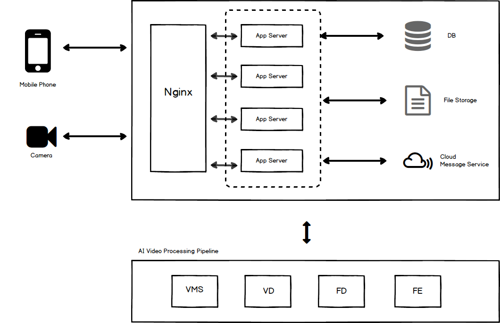

AI Cam 解决方案文档¶
CamService’s documentation
本文档主要介绍了AI 摄像头Solution 的架构 包括了 后台服务 和 人脸识别系统 和 用户手机端APP
系统结构¶
以上三部分的结构组成与关系如下所示
基本流程：
- 摄像头/移动端APP 上传视频 或者 APP发送其他请求
- 后端Nginx作为反向代理分发请求到APP Server
- APP Server 处理请求并调用其他服务
- 存储数据库
- 存储视频图片等文件
- 人脸识别和比对服务
- 调用第三方云端信息服务给用户推送提醒
- 在视频上传后通过APP Server转发给AI服务处理， 模块和步骤分为
- 视频文件获取和查找
- 视频格式转码
- 视频抽帧检测人脸
- 提取人脸图片的人脸特征字符串
- 在有了人脸分析和比对结果之后， AI服务再将结果发回APP Server
- APP Server将结果对应到相应用户写入数据库并在必要时发送手机APP推送提醒
- 手机前端显示最近写入结果和更改
Back-End Service 后台服务:
AI Facial Recognition 人脸识别:
Mobile APP 用户手机端APP: